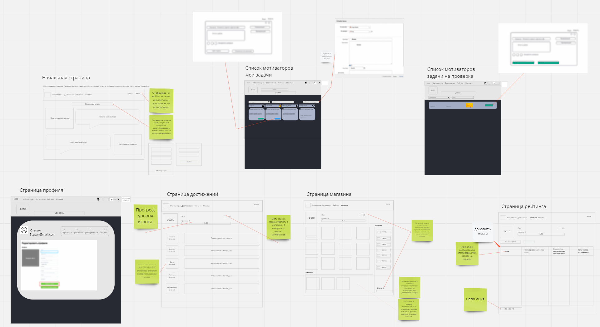
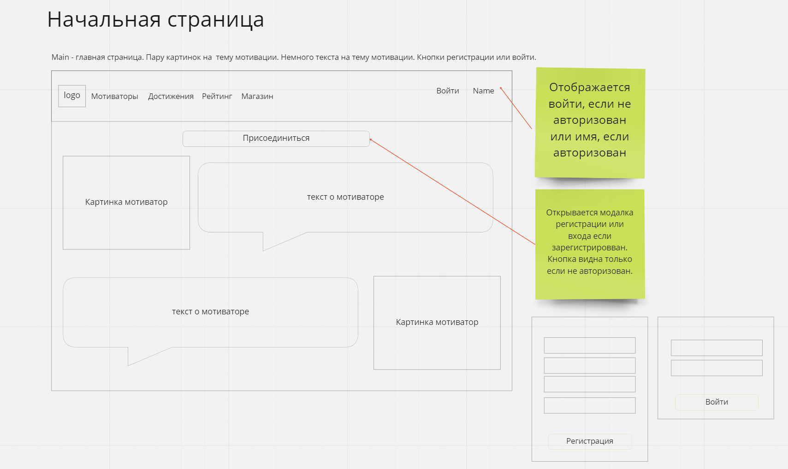
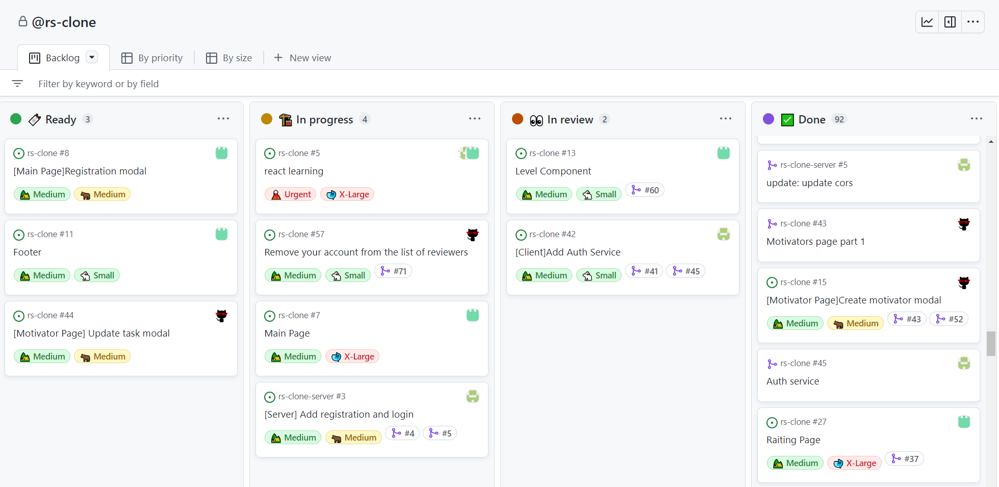
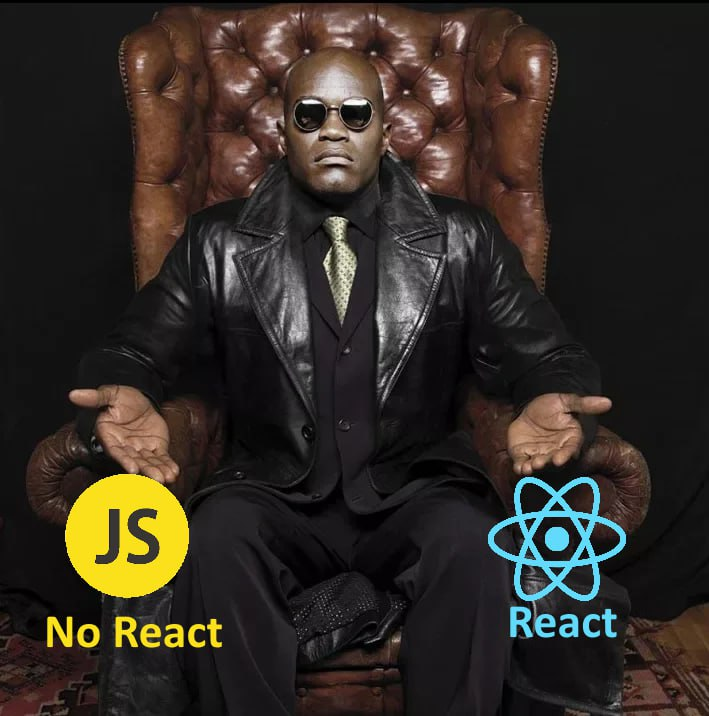
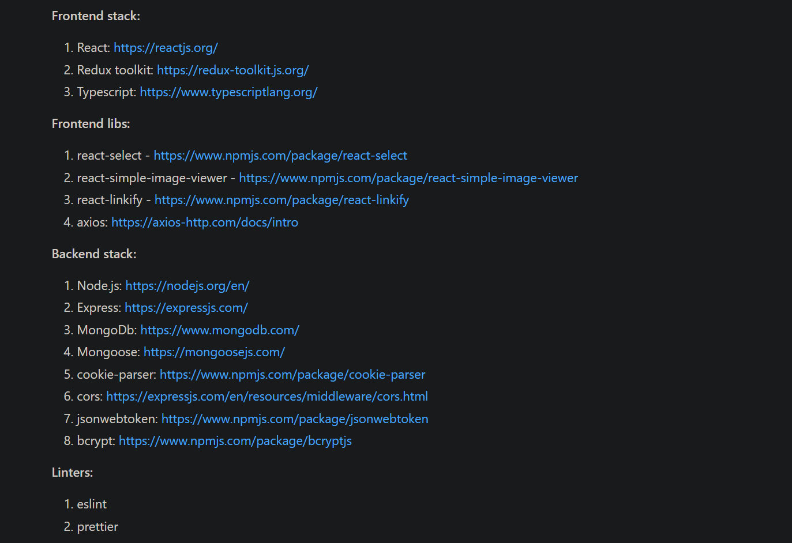
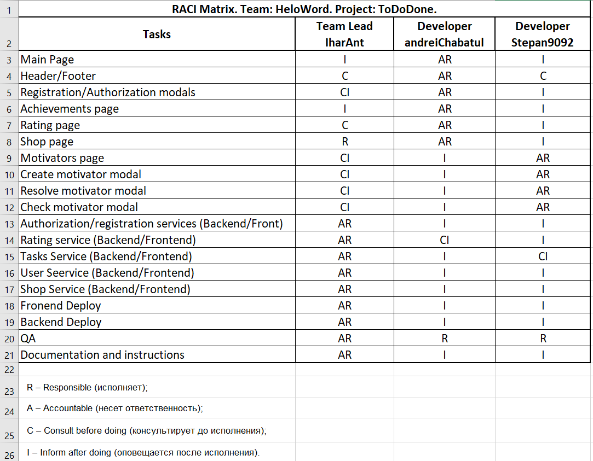

Над проектом работали:
Ihar Antonenka - Team Lead/Developer
Andrei Chabatul - Developer
Stepan Zubik - Developer
Какой проект сделать. Может шахматы?
Miro. Схематичное ТЗ 
Главная страница. 
Kanban доска. 
Сложность выбора. 
Выбор сделан. 
Демонстрация проекта...

Спасибо за внимание!